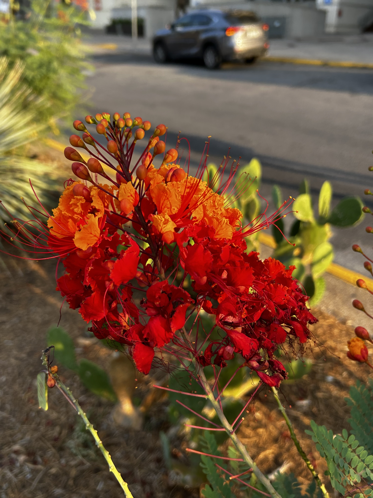
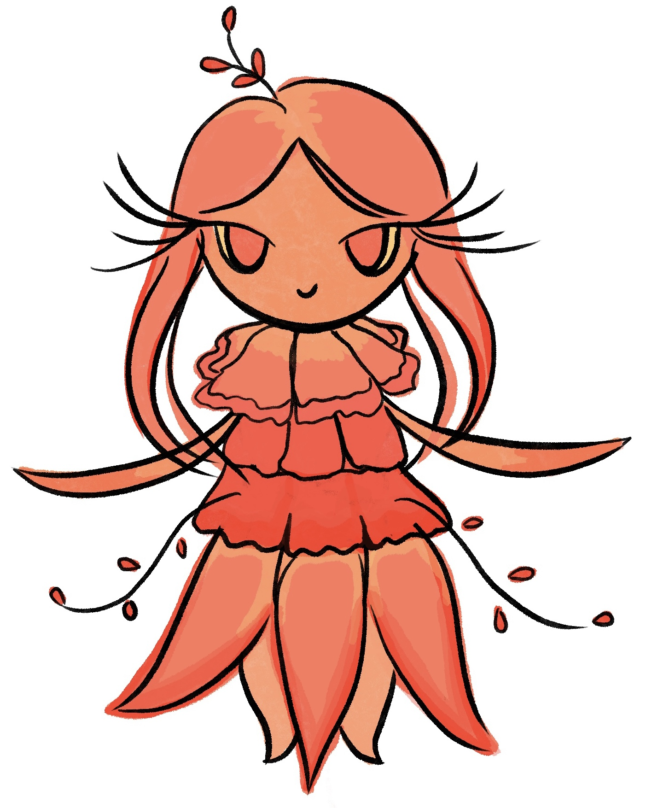

<
Make sure to tap the image to reveal Flareheart!!!
Caesalpinia Pulcherrima (Pride-of-Barbados)


Flareheart
PLANT FACTS: The Pride of Barbados is a striking ornamental shrub known for its vibrant and fiery color. Its bright red, orange, and yellow flowers act as natural beacons, attracting hummingbirds, butterflies, and bees. By supporting these pollinators, the plant plays an important role in maintaining biodiversity and healthy ecosystems.
PLANT POWER: Flareheart can ignite radiant pulses of energy that summon allies from far away, turning them into temporary avatars who fight by her side and help restore balance to the world. She is a guardian of ecosystems and a powerful force in times of chaos. Flareheart’s presence inspires unity and ensures survival and support in even the harshest circumstances.